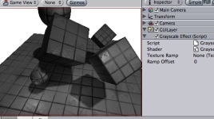

Previous
Previous
Grayscale is a simple image effect that changes colors to grayscale by default. It can also use color ramp texture to remap luminance to arbitrary colors.
As with all image effects, it is available in Unity Pro only. Make sure to have the Pro Standard Assets installed.

Grayscale image effect applied to the scene
Remapping colors
Grayscale can do a simple version of color correction, i.e. remap grayscale image into arbitrary colors. This can be used for effects like heat vision.
The process of color remapping is very similar to ColorCorrection effect:
- Take a screenshot of a typical scene in your game.
- Open it in Photoshop and convert to grayscale.
- Color correct it using the Image->Adjustments->Curves.
- Save the .acv file file from the dialog using Save...
- Open Pro Standard Assets/Image Based/color correction ramp.png in Photoshop
- Now apply color correction to the ramp image: open Image->Adjustments->Curves again and load your saved .acv file
- Select your camera in Unity and select Component->Image Effects->Grayscale to add the effect. Select your modified color ramp.
- Hit Play to see the effect in action!
Details
Color remapping works by remapping the original image luminance through the color ramp image (sized 256x1):
- result color = pixel's color in the ramp image at (OriginalLuminance + RampOffset) index
So for example, to invert the colors in the image you only need to flip the original color ramp horizontally (so that it goes from white to black instead of from black to white).
A more complex version of color remapping that does arbitrary color correction can be achieved with ColorCorrection image effect.
Tips:
- You need to attach the image effect to the camera while edit mode. To see the effect you have to go into playmode afterwards.
Grayscale works on graphics cards with support for pixel shaders (2.0). E.g. GeForce FX 5200 or Radeon 9500 and up. All image effects automatically disable themselves when they can not run on an end-users graphics card.